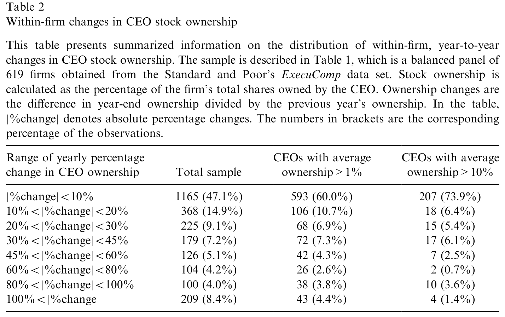
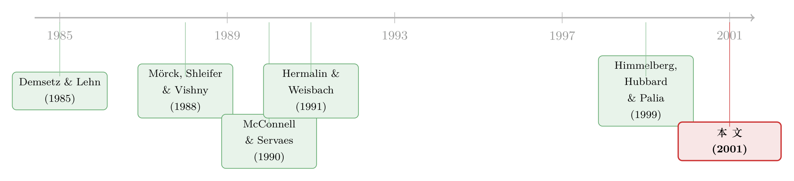

横着看天差地别，竖着看几乎不动——固定效应为什么测不出持股与业绩
本文读的是 Zhou (2001, Journal of Financial Economics)：这是一篇对 Himmelberg, Hubbard & Palia (1999) 的评论。HHP 用固定效应估计发现「管理层持股与公司业绩之间没有有意义的关系」，并据此推断前人发现的相关性多半是遗漏变量造成的「伪相关」。Zhou 指出一个被忽略的事实——CEO 持股在公司之间天差地别，在同一家公司内部却几乎不动。既然固定效应只用「公司内部的逐年变化」来识别效应，而真正承载激励信号的恰恰是「横截面差异」，那么哪怕持股真的影响业绩，固定效应也照样什么都测不到。
1 一个让人左右为难的问题
「老板自己持股越多，公司是不是经营得越好？」——这大概是公司治理里最古老、也最直觉的一个问题。直觉很简单：当 CEO 手里攥着大把自家股票，他的利益就和股东绑在了一起，自然会更卖力地为股价着想。这就是所谓的利益趋同 (incentive alignment)。
可一旦真的去数据里找证据，事情就变得暧昧起来。Demsetz and Lehn (1985)、Mork, Shleifer & Vishny (1988)、McConnell and Servaes (1990)、Hermalin and Weisbach (1991)——这一长串名字得到的结论彼此打架：有人发现正相关，有人发现非单调，有人干脆什么都找不到。于是人们又造出第二个故事来圆场：持股太多，CEO 反而可以自我固守 (entrenchment)，谁也炒不动他，业绩因此变差。一正一反，两个力道方向相反，「混合证据」便顺理成章地成了「持股作用复杂」的注脚。
接着，一个自然的问题是：这些相关性，会不会根本就是假的？
2 HHP 的「干净」答案，与它的代价
1999 年，Himmelberg、Hubbard 和 Palia（下称 HHP）给出了一个看起来非常干净的回答。他们的逻辑是教科书式的：持股不是天上掉下来的，它和业绩一样，都被某些看不见的公司异质性 (unobserved firm heterogeneity) 同时决定——比如一家公司的资产无形程度、监督难易、风险特征。如果这些东西既影响「老板该持多少股」、又影响「公司能做多好」，那么前人那条 OLS 回归线，量到的就只是一段伪相关 (spurious correlation)。
怎么办？HHP 的处方是面板数据 (panel data) + 公司固定效应 (firm fixed effects)。固定效应的妙处在于，它给每家公司减掉一个专属的截距，等价于只用「这家公司自己逐年偏离其均值的那部分变化」来做回归。凡是不随时间变的东西——无论看得见看不见——统统被吸收掉。于是那些恼人的、恒定的公司异质性就被一笔勾销了。
用了这把手术刀之后，HHP 发现：持股与业绩之间，没有任何有意义的相关。结论顺理成章——前人没控制住公司异质性，他们的估计不一致，看到的多半是幻觉。
故事到这里，似乎该收场了。但真正关键的一步在于：固定效应这把刀，到底切掉了什么？
3 反转：它切掉的，正是答案本身
Zhou 的整篇评论，其实只围着一个事实反复打转，而这个事实简单到几乎不需要模型：
CEO 持股在横截面上差异巨大，在时间序列上却变化缓慢。
固定效应估计量（也叫组内估计量，within estimator）只吃「组内变异」——即每家公司自己逐年的波动；它把所有「组间变异」（between variation，公司与公司之间的差异）全部扔掉了。可问题恰恰在于：如果持股真的提供激励，这种激励是一种长期关系。CEO 在一家公司一待就是许多年，他卖不卖力，取决于他长期的财富和公司长期的业绩之间那条纽带——而不是今年比去年多了 3% 还是少了 5%。
Zhou 把这个直觉讲得很形象。设想两位 CEO：一位平均持有自家 10% 的股票，另一位只有 0.1%。再假设两人每年的持股变动都很小、且大体随机，比如不超过 10%。那么第一位的持股常年在 9%–11% 之间打转，第二位则在 0.09%–0.11% 之间。如果股权真的重要，你应当预期这两个人之间的业绩有显著差别——可你不应当预期任何一家公司内部出现可观测的逐年业绩波动。
换句话说，激励的差别写在「人和人之间」，而 HHP 偏偏把这一维度抹掉了，只盯着「同一个人不同年份」那点几乎不动的波动去找信号。哪怕大额持股确实带来更好的长期业绩，这种效应也只会以横截面的形式显形；用固定效应去测它，就像盯着一根几乎不动的指针，然后宣布「它和任何东西都无关」。
事实上，这并不是 Zhou 一个人的洞见。Hermalin and Weisbach (1991) 早就明确拒绝过往方程里塞公司虚拟变量的做法，理由一模一样——他们直言「既然我们相信驱动结果的主要力量是公司间变异，我们就不采用这种方法」(p. 107)。
4 把刀放下，去数一数持股到底动不动
光讲道理还不够。Zhou 这篇评论最扎实的地方，是他真的去把数据摊开，让你亲眼看到持股动得有多慢、差得有多远。
他从 Standard & Poor's 的 ExecuComp 数据库里取了 1993–1997 五年的 CEO 持股。为了把高管更替这个噪声源掐掉——新官上任往往从零持股起步，几年内靠限制性股票和期权迅速堆到一个稳定水平——他剔除了 1992–1997 年间换过 CEO 的公司，又剔除了零持股的少数样本，最终留下一个 619 家公司的平衡面板 (balanced panel)。持股的口径是 CEO 持有的股票数（含限制性股票、不含期权）占公司总股本的百分比。
先看「竖着」的变化有多小。 Zhou 把每家公司逐年的持股变动（年末持股相对上一年的百分比变化）做成分布，这就是全文最核心的一张证据：

Table 2: shows the distribution of year-to-year changes in a CEO’s
如表 2 所示，对全样本而言，将近一半（47.1%，1165 个观测）的年度变动绝对值小于 10%。而且持股越高的 CEO，变动越小：在平均持股超过 1% 的子样本里，这一比例升到 60.0%；在平均持股超过 10% 的「大股东型」CEO 里，约有四分之三（73.9%）的年度变动小于 10%。Zhou 一句话点破：你不会指望一位 CEO 因为今年行权让持股多了 5% 就更卖力，转过年卖掉 5% 股票又开始偷懒。在长期雇佣关系里，人的行为不会被这种小而可能临时的持股波动牵着走。
再看「横着」的差异有多大。 与组内的「几乎不动」形成刺眼对照的，是组间的「天差地别」。Zhou 把全样本按 CEO 平均持股分成十档：最低一档的中位持股是 0.019%，最高一档则高达 19.634%——相差约 1000 倍。同一个市场里，有人手里的股权微乎其微，有人则牢牢掌握着公司近五分之一的股本。
一边是变化缓慢到近乎静止的时间序列，一边是横跨三个数量级的横截面差异。把这两张图并排放在一起，Zhou 的论点就几乎不证自明了：固定效应丢掉的那 1000 倍差异，恰恰是激励信号最可能藏身的地方。
5 一段轻量的形式化：组内 vs. 组间
如果你想把这件事写得更「计量」一点，可以借 Zhou 在方法论一节里给出的表达式。设 \(m_{it}\) 为公司 \(i\) 在第 \(t\) 年的持股。在一个慢变的、其余条件受控的世界里，把它拆成一个公司专属的均值与一个逐年扰动：
$$ m_{it} = E(m_{it}) + \varepsilon_{it} $$
Zhou 指出，若把 HHP 方程里的股权项取为其均值 \(E(m_{it})\)，那么承载激励效应的那一项就变成
$$ \delta_y\, E(m_{it}) $$
它对每家公司是一个常数，于是被固定效应当成「其它恒定的异质性因子」一并吸收掉了。而在横截面检验里，当下标 \(i\) 重要、\(t\) 不重要时（即组间变异大、组内变异小），这一项可以被合理地近似为
$$ \delta_y\, m_{it} $$
——这正是前人 OLS 里那条显著的持股—业绩关系。难怪它一旦被固定效应抽走横截面变异，就「凭空消失」了。这不是发现了真相，而是把携带信息的那一维亲手删掉了。
更糟的是，组内估计量还会放大测量误差 (measurement error) 的危害。Griliches and Hausman (1986) 早已指出：差分类（组内）变换会拉低信噪比，使衰减偏误（attenuation bias）更严重。HHP 自己也承认了这一点。于是「测不到关系」就有了两个叠加的来源——既洗掉了真信号，又放大了噪声。
这里要替 HHP 说句公道话：固定效应本身没有错，它对付「恒定的遗漏变量」是利器。Zhou 的批评不是「固定效应是坏方法」，而是「当被解释的自变量本身几乎没有组内变异时，固定效应会把答案连同混淆一起倒掉」。方法对不对，要看它和数据的结构合不合得来。
6 工具变量为什么「帮了倒忙」？
如果真存在一个由「看不见的异质性」造成的内生性问题，那么有效的工具变量法（IV）和有效的固定效应法，应当把 OLS 的估计往同一个方向拉。可 Zhou 提醒我们去看 HHP 自己的结果：那条在 OLS 里显著、在固定效应里消失的持股—业绩关系，在 IV 检验里反而变得更强了。Hermalin and Weisbach (1991) 也有类似发现——用常见的样条设定，IV 不但没削弱、反而强化了 OLS 里的关系。
这就尴尬了。如果 OLS 里的相关性真是内生性造的伪相关，IV 本该把它「修」掉；可 IV 偏偏把它修得更接近前人结论。两种本应同向的工具给出相反的信号，本身就是对「伪相关」叙事的一个反证。（关于工具变量有时会「洗掉」研究者最想要的那部分因果变异，可参见《工具变量「洗掉」的，恰恰是 CFO 最需要的那部分因果》。）
7 最后一刀：别忘了期权
Zhou 还顺手补了一个 HHP 因数据不足而忽略的维度——股票期权 (stock options)。1980 年代以来高管期权爆炸式增长，期权提供的激励常常和直接持股相当甚至更大（Hall and Liebman, 1998 甚至认为期权才是激励的主体）。如果忽略期权，除非期权要么小到可忽略、要么和持股近乎完美相关，否则检验就会出大问题。
Zhou 的数据说，这两个「除非」都不成立。把每位 CEO 的「期权/持股」比率按十档排开：约 30% 的 CEO 期权微不足道，40% 的期权规模和持股相当，剩下的则期权占主导。两者既不可忽略，也远非同步——他进一步用一组回归（表 6）把持股对期权做了 pooled / between / fixed-effects 三种估计。耐人寻味的是，between 模型里两者关系很强但非单调：低持股 CEO 的弹性是 0.32，到高持股组下降 0.58、变成 −0.26（低持股时期权与持股互补，高持股时则因风险厌恶而互相替代）。可一旦上了固定效应，组内相关就经济上微不足道了（ln(OptionHoldings) 系数仅 0.0656，虽然 t 值高达 5.6）。这再次印证了同一个主题：有意义的结构关系活在横截面里，组内变化里几乎不含信息。
8 文献脉络
把这条线索捋一捋，会看到一个相当典型的「方法论拉锯」故事。
最早，Demsetz and Lehn (1985) 提出所有权结构是内生的；Mork, Shleifer & Vishny (1988) 用横截面回归发现持股与价值之间的非单调关系，McConnell and Servaes (1990) 给出更多横截面证据。这一阶段，大家用的几乎都是横截面或混合 OLS，结论虽不一致，但「持股重要」是主流直觉。
转折点是 Hermalin and Weisbach (1991)：他们一边做实证，一边明确讨论过要不要用公司虚拟变量，并自觉地拒绝了——因为那会洗掉他们认定的主要驱动力（组间变异）。这其实已经预言了后来的争论。

然后 Himmelberg, Hubbard & Palia (1999) 把面板固定效应正式推上前台，得出「无关系」的结论。Zhou (2001) 这篇评论站在的位置，正是对这股「固定效应崇拜」的一次冷静回拨：它不否定内生性问题的存在，但提醒大家，当核心自变量缺乏组内变异时，固定效应不是解药而是迷雾。这个教训远远超出了管理层持股本身——今天我们在交错双重差分、面板识别里反复遇到的「变异从哪来」的追问，与它一脉相承（关于「更稳健」的设计如何反而把符号弄反，可参见《当「更稳健」的设计悄悄把符号弄反了——重读交错双重差分》）。
9 评论与延伸（Q&A + 研究方向）
(a) 几个可能的疑问
Q：Zhou 是不是在说「固定效应是坏方法」？
不是。他的论点是条件性的：固定效应专治「恒定的遗漏变量」，本身没问题。问题出在被研究的自变量（CEO 持股）几乎没有组内变异时——这时组内估计量既洗掉了真正承载信号的横截面差异，又因低信噪比放大了测量误差。方法的好坏取决于它和数据结构是否匹配。
Q：HHP 说前人结果是伪相关，Zhou 说不是，谁更对？
Zhou 并没有证明持股确实影响业绩，他只证明了 HHP 的「无关系」不能作为反对它的强证据。一个干净的反证来自 HHP 自己：若真有内生性，IV 应与固定效应同向修正 OLS；可 IV 反而强化了 OLS 里的关系。这说明把 OLS 的相关一口咬定为伪相关，证据并不足。
Q：持股「变化缓慢」难道不正说明它不重要吗？
恰恰相反。慢变意味着它更像一个长期、近乎恒定的激励参数，而非逐年波动的冲击。激励效应因此会沉淀为「公司层面的常数」，在横截面里显形、在组内被吸收。慢变是激励作为长期契约的特征，不是它无关紧要的证据。
Q：为什么持股越高的 CEO，变动反而越小？
数据显示平均持股 >10% 的 CEO 中约 73.9% 的年度变动 <10%，远高于全样本的 47.1%。Zhou 引 Core and Guay (1998) 的解释：公司似乎存在一个目标持股水平，大股东型 CEO 已经稳定在高位，偏离的余地小；而低持股 CEO 的比率会被期权行权等小额变动放大。Ofek and Yermack (2000) 也发现高管行权拿到股票后几乎全部卖掉，主动维持目标持股。
Q：忽略期权到底有多严重？
严重到可能改变结论。期权提供的激励常与持股相当甚至更大，且两者关系非单调（低持股互补、高持股替代），组内还几乎不相关。只用持股、不计期权，等于丢掉了高管激励的一大半，估计自然失真。
Q：这篇评论对今天做面板因果的人有什么用？
一句话：先看自变量的方差分解，再选估计量。 在跑固定效应之前，问问「我的处理变量有多少组内变异？」如果绝大部分变异是组间的，固定效应会把识别力一起吸走。这是比「该不该控公司固定效应」更根本的诊断。
(b) 几个可能的研究问题与提案
1. 把「方差分解」做成持股—业绩文献的标准前置诊断。
- 【经济故事】Zhou 的核心其实是一句计量常识：组内变异占比决定了固定效应有没有识别力。可至今很少有论文在回归前报告关键自变量的 within/between 方差分解。
- 【可行性】高。用 ExecuComp 或 BoardEx 重做经典回归，附上每个自变量的方差分解和「若仅靠组内变异、检验功效有多大」的功效分析即可。数据现成，识别无负担。
2. 用「外生的持股跳变」恢复横截面识别。 - 【经济故事】Zhou 说激励效应是横截面现象、组内几乎不动。那能否找到让组内也大幅跳变的外生事件——如反收购立法、税法变动、强制增持规定——制造可信的组内变异，再看业绩？ - 【可行性】中。本博客已评述过强制增持的后果（见《强制老板多持股，公司真的会变好吗？》）与反收购法下的控制权动机（见《少持股，也能照样说了算》）。难点在于找到既外生、组内变化又足够大的冲击。
3. 把同样的「慢变自变量」诊断搬到公司债与信用市场。 - 【经济故事】公司债研究里也有大量「慢变」的发行人特征（评级、治理评分、机构持有结构），却常被塞进发行人固定效应。它们会不会同样被组内变换洗掉？ - 【可行性】中高。用 TRACE + Mergent FISD 构造发行人面板，对「评级—利差」「治理—利差」做 within/between 分解，检验固定效应是否抹掉了本属横截面的定价信息。数据可得，识别清晰。
4. 外资持有人与业绩：又一个「横截面 vs. 组内」的战场。 - 【经济故事】外资持股比例同样在公司间差异巨大、在公司内部缓慢爬升。若直接上固定效应去测「外资持股→业绩/流动性」，是否会重蹈 HHP 的覆辙？ - 【可行性】中。用 FactSet/13F 或新兴市场持股数据构造面板，对比 between 与 within 估计，并辅以 MSCI 纳入等外生事件提供组内变异。可与外资—流动性这条线自然衔接。
5. 期权口径如何改写激励—业绩的全部结论。
- 【经济故事】Zhou 证明期权与持股既不可忽略、又非同步。那么用「股票+期权」的总股权激励（delta/vega）替换纯持股，HHP 的「无关系」会不会被翻案？
- 【可行性】高。ExecuComp 自 1992 年起即有期权数据，按 Core-Guay 方法构造激励 delta，重做面板回归并报告方差分解即可。
参考文献
- Core, J., Guay, G. (1998). The stock and flow of CEO equity incentives. Working paper, The Wharton School, University of Pennsylvania.
- Demsetz, H., Lehn, K. (1985). The structure of corporate ownership: causes and consequences. Journal of Political Economy 93, 1155–1177.
- Griliches, Z., Hausman, J. (1986). Errors in variables in panel data. Journal of Econometrics 31, 93–118.
- Hall, B., Liebman, J. (1998). Are CEOs really paid like bureaucrats? Quarterly Journal of Economics 113, 653–691.
- Hermalin, B., Weisbach, M. (1991). The effects of board composition and direct incentives on firm performance. Financial Management 20, 101–112.
- Himmelberg, C., Hubbard, R., Palia, D. (1999). Understanding the determinants of managerial ownership and the link between ownership and performance. Journal of Financial Economics 53, 353–384.
- McConnell, J., Servaes, H. (1990). Additional evidence on equity ownership and corporate value. Journal of Financial Economics 27, 595–612.
- Mork, R., Shleifer, A., Vishny, R. (1988). Management ownership and market valuation. Journal of Financial Economics 20, 293–315.
- Ofek, E., Yermack, D. (2000). Taking stock: equity-based compensation and the evolution of managerial ownership. Journal of Finance 55, 1367–1384.
- Zhou, X. (2001). Understanding the determinants of managerial ownership and the link between ownership and performance: comment. Journal of Financial Economics 62, 559–571.